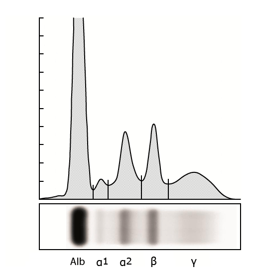

Normal pattern on serum protein electrophoresis

Looking from left to right on the serum protein electrophoresis, a normal pattern has a large peak representing albumin followed by significantly smaller peaks for alpha-1, alpha-2, beta, and gamma.
Graphic 74787 Version 4.0